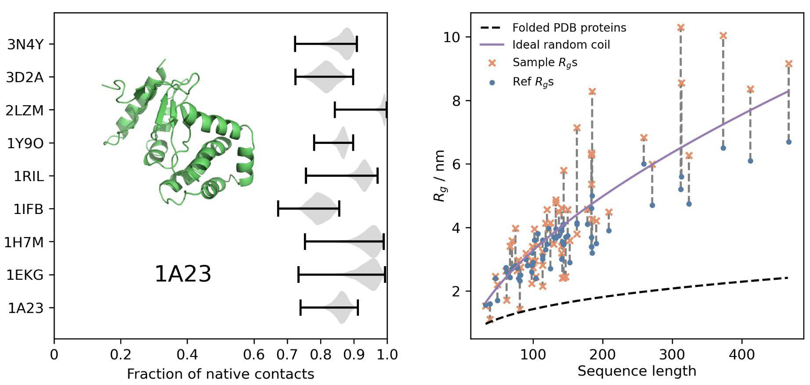

Emulación escalable de ensambles de equilibrio de proteínas
mediante aprendizaje profundo generativo
Lewis et al. · Science 389, eadv9817 (2025)
Las proteínas viven en movimiento
Una estructura del PDB es una fotografía, no la distribución de equilibrio completa
¿Qué ignora una sola estructura?
- Movimientos de dominio (abierto ↔ cerrado)
- Cavidades crípticas de unión a ligandos
- Regiones intrínsecamente desordenadas (IDPs)
- Estados menoritarios con relevancia funcional
Pregunta del paper
¿Puede el aprendizaje profundo aprender la distribución de equilibrio completa de una proteína a partir de simulaciones de MD y datos experimentales de estabilidad?
La función depende de poblaciones, no solo de una conformación
¿Por qué no basta la Dinámica Molecular?
Lo que MD hace bien
- Trayectorias temporales átomo por átomo
- Mecanismos de transición y cinética
- Fuerzas y campos de potencial explícitos
El problema de muestreo
- Proteínas quedan atrapadas en mínimos de energía
- Transiciones lentas: µs–ms de simulación
- Equipos DESRES: años de GPU para millisegundos
- Estimar poblaciones exige muchas transiciones
BioEmu aprende la distribución y genera muestras independientes directamente — sin simular la trayectoria temporal entre estados.
Paisaje de energía libre — la barrera es el cuello de botella temporal
MD para equilibrio
BioEmu en 1 GPU
¿Qué genera BioEmu? Pipeline completo
Evoformer
Encoder de AlphaFold2: representaciones single (por residuo) y pair (entre pares). Captura contexto evolutivo. Condicionan al modelo de difusión.
Score model
Guía la eliminación de ruido iterativamente (30–50 pasos). Aprende el gradiente de la distribución de equilibrio.
Muestras ~ equilibrio
Frecuencia de muestreo ≈ poblaciones de equilibrio. Miles de estructuras/hora en 1 GPU. Independientes estadísticamente.
Entrenamiento en 3 etapas — la innovación está en cómo integra los datos
PPFT — Property-Prediction Fine-Tuning
¿Qué problema resuelve?
No se tienen estructuras medidas experimentalmente de cada mutante. Pero sí se tienen valores de expectativa (estabilidades ΔG). PPFT entrena el modelo de difusión directamente con esos valores escalares.
Cómo funciona
- Generar muestras rápidas (8 pasos de denoising)
- Clasificar cada muestra como plegada/desplegada (contactos nativos ≥ 0.65)
- Comparar proporción predicha vs. experimental
- Backpropagar el error → ajustar el modelo
Interpretabilidad
A diferencia de un predictor escalar (caja negra), BioEmu genera el ensemble estructural que explica la pérdida de estabilidad — se puede ver el cambio conformacional directamente.
¿Predice BioEmu conformaciones conocidas?
Tres tipos de cambios conformacionales con referencias experimentales del PDB:
adenilato quinasa, LAO-BP, c-di-GMP — RMSD ≤3 Å
estados desplegados conocidos
estado holo — ¡predicción de bolsillos de unión!
sesgo del PDB hacia estructuras con ligandos
La performance no depende fuertemente de la similitud de secuencia con el set de entrenamiento — indica generalización, no memorización.

¿Reproduce los paisajes de energía libre?

Contexto: el error experimental típico de mediciones calorimétricas de ΔG es ~1 kcal/mol. Un MAE de 0.74 significa que BioEmu opera dentro del ruido experimental.
¿Hasta dónde generaliza el modelo?

17 dominios CATH
MAE ~0.9 kcal/mol. Agregar más proteínas de entrenamiento reduce el error progresivamente — el modelo no ha saturado, tiene margen de mejora.
Complexina II — IDP (134 aa)
Proteína intrínsecamente desordenada. BioEmu reproduce contenido helicoidal y radio de giro correctamente. MD convergida requiere 5 µs (~10× más cara).
CD9 — Tetraspanina (225 aa)
Reproduce la transición abierto/cerrado entre lóbulos extracelulares. Limitación no captura todos los estados de MD detallados.
Predicción de estabilidad y efecto de mutaciones

Ejemplo interpretable
I7P en HHH_rd1_0335: altera la propensión helicoidal.
ΔΔG predicho 1.8 vs. experimental 2.1 kcal/mol.
I24D en 2JWS: aspartato en el núcleo hidrofóbico → desestabiliza la hélice adyacente.
Entrenado en 502,442 mutantes de 361 proteínas silvestres del dataset MEGAscale (Lewis et al., 2023).
Límites honestos del método
❌ Lo que BioEmu NO hace
✅ Lo que BioEmu SÍ aporta
Aplicando BioEmu a una proteína quimérica de 339 residuos: el dominio regulador de respuesta CheY insertado dentro de la proteína de unión a leucina LBP.
github.com/jtuxman/lbpchey-bioemu · BioEmu v1.4.1 · checkpoint bioemu-v1.1
La proteína: LBPCheY y el pipeline
Arquitectura de LBPCheY (339 aa)
Pipeline paso a paso
Modelo de referencia AF3
pTM = 0.81 — alta confianza global. Usado como referencia para alinear el ensemble y calcular RMSD y giros de CheY.
¿Cuánto se mueve cada lóbulo?
| Medida | Media ± SD | Rango (Å) |
|---|---|---|
| RMSD CheY | 0.81 ± 0.30 Å | 0.40–2.35 |
| RMSD LBP | 2.30 ± 1.87 Å | 0.76–18.71 |
| RMSD global | 3.56 ± 2.32 Å | 0.79–21.37 |
| Dist. centros | 27.9 ± 2.0 Å | 23.0–36.2 |
Interpretación
- CheY es muy rígido (~0.8 Å) — fold de respuesta estable
- LBP es flexible — algunas muestras muy alejadas del modelo AF3
- RMSD global > RMSD lóbulo → movimiento relativo real entre dominios

Los lóbulos se separan hasta ~13 Å

Lo que vemos
Distribución unimodal y ancha — movimiento continuo, no transición entre dos estados discretos. La quimera explora un rango amplio de aperturas.
¿Por qué importa?
Coherente con el mecanismo de proteínas tipo LBP, que operan mediante movimientos de lóbulos al unirse al sustrato (leucina). La inserción de CheY no bloquea este movimiento.
Sin BioEmu, este resultado requeriría µs de MD. Se obtuvo en horas en 1 GPU.
Superficie de energía libre de LBPCheY

3 conformaciones (PCA + k-means)
AF3 (⭐) cae en el mínimo de energía libre — coherente: AlphaFold3 predice la conformación termodinámicamente más estable.
Las islas periféricas del paisaje son conformaciones minoritarias accesibles térmicamente a 300 K — invisibles en una sola estructura.
Perfiles 1D: distancia inter-dominio y giro de CheY
Lectura de los perfiles
- Mínimo izquierdo (~27.5 Å): estado más poblado, cerca del modelo AF3
- La curva sube gradualmente — sin barrera abrupta entre estados
- Giro de CheY: mínimo en 0° (= AF3), estados alternos a ±100°
- El doble pozo suave en el giro sugiere movimiento de precesión del dominio insertado
Estabilidad termodinámica
Las 246/246 muestras están plegadas (fracción contactos nativos ≥ 0.65 para ambos lóbulos). ΔG de desplegamiento > 3.3 kcal/mol — la quimera mantiene ambos folds simultáneamente.
El cálculo: ΔG = −kT·ln(pᵢ/p₁), T=300 K, kT=0.596 kcal/mol. Poblaciones obtenidas por conteo directo de muestras por bin.

Conclusiones integradas
Del paper (Lewis et al.)
- BioEmu genera ensambles con MAE ~0.74–0.9 kcal/mol en ΔG
- 10⁴–10⁵× más rápido que MD para muestreo de equilibrio
- PPFT: calibración experimental sin estructuras de mutantes
- Generaliza a IDPs, tetraspaninas, y dominios CATH diversos
De nuestro experimento
- CheY rígido (0.81 Å), LBP flexible (hasta 18.7 Å)
- Movimiento relativo entre lóbulos: rango de ~13 Å
- Ambos dominios estables simultáneamente (ΔG >3.3 kcal/mol)
- 3 regiones conformacionales en el paisaje de energía libre
Modelar LBPCheY + leucina (sustrato) para ver si cambia la distribución de lóbulos · Comparar con MD explícita (100 ns) · Screening de mutantes estabilizadores con PPFT · Extender a proteínas homólogas tipo PBP.
Lewis et al. · Science 389, eadv9817 (2025) · github.com/jtuxman/lbpchey-bioemu